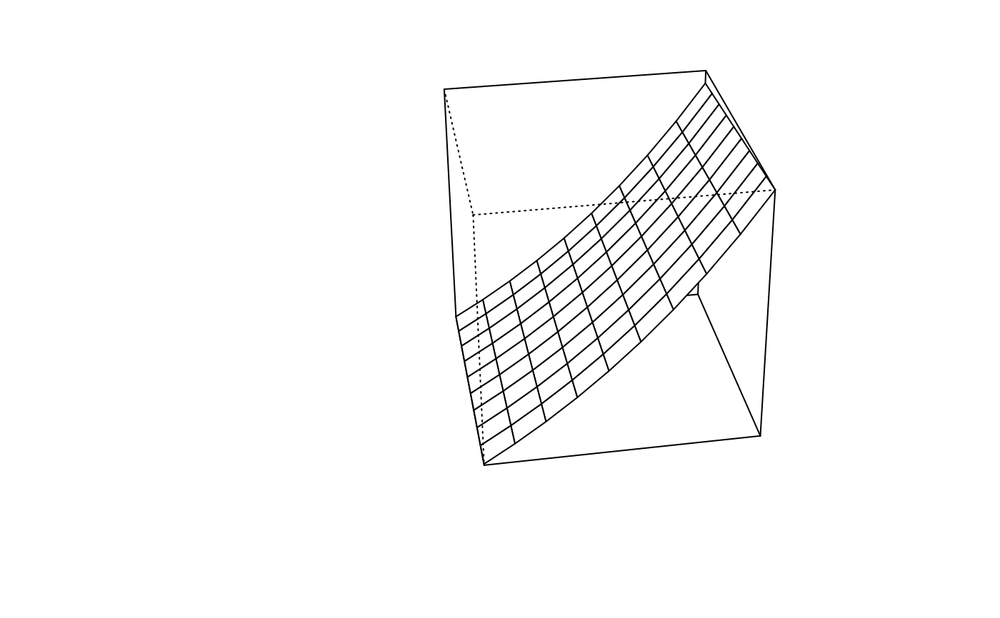

Display an enhanced perspective plot with additional return values
Arguments
- x,y,z
x, y and z coordinates to plot.
- ...
Other arguments passed to persp.
Details
Displays z values plotted on an x,y grid.
Value
A list with three elements, the ranges of x, y and z.
Examples
x <- 1:10
y <- 1:10
z <- outer(x,y,function(x,y) { 3*sin(2*pi*x)/(2*pi*x)+exp(y/10)+(x*y)/1000 })
par(mar=c(5,10,2,2))
pp <- perspx(x,y,z,ticktype="detailed",phi=30,theta=80,nticks=3,r=10,
axes=FALSE)
